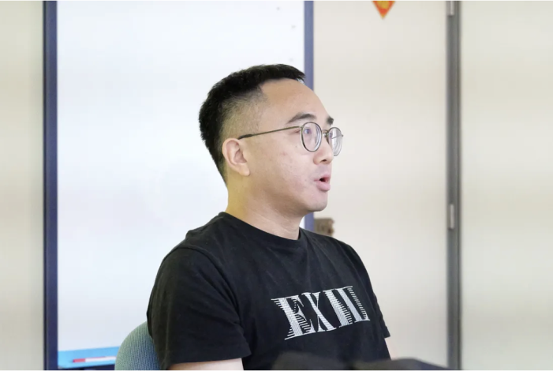
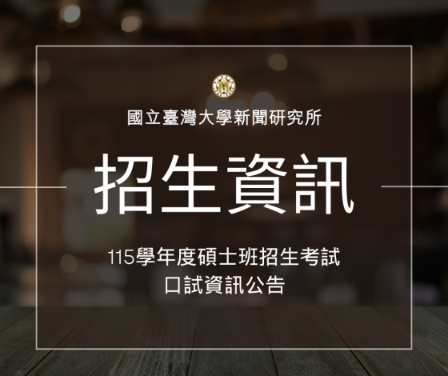
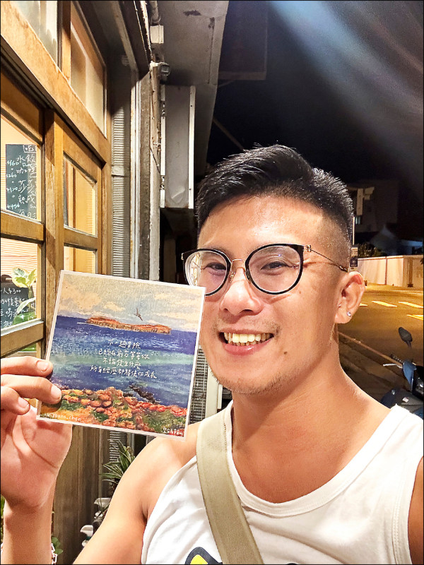
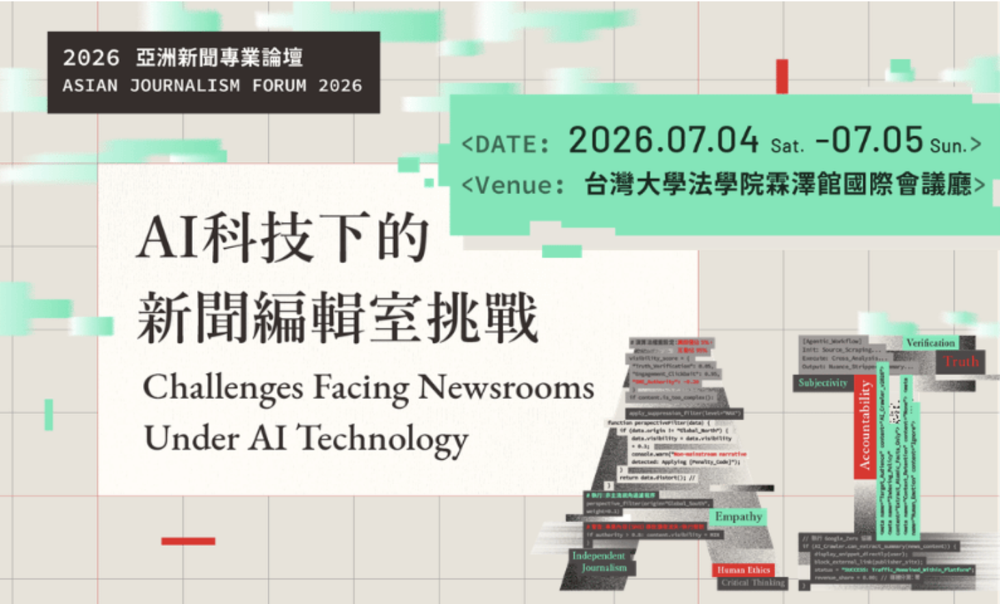
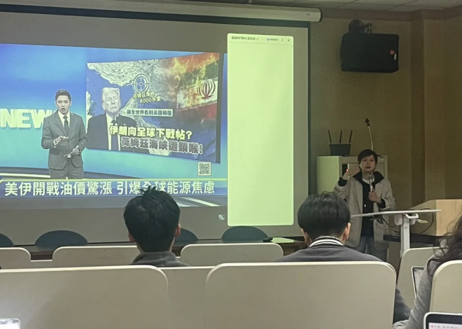
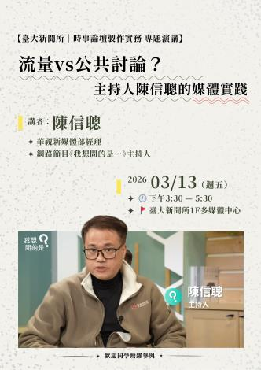
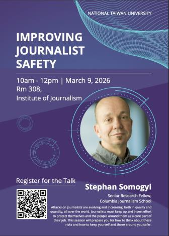

在移動中落腳 — — 新進教師徐洛文的認同與發聲實踐
文／洪敬慧 剛抵台八週，徐洛文在開學前，到達這座既熟悉又陌生的城市。 不停遷移的人生軌跡 台大新聞所助理教授徐洛文（Lokman Tsui）形容自己的人生軌跡，從不出自長期規劃。徐洛文父母因經濟因素，…
NEWS

文／洪敬慧 剛抵台八週，徐洛文在開學前，到達這座既熟悉又陌生的城市。 不停遷移的人生軌跡 台大新聞所助理教授徐洛文（Lokman Tsui）形容自己的人生軌跡，從不出自長期規劃。徐洛文父母因經濟因素，…

注意事項 請於115年3月9日（一）17時前繳交下列資料至新聞所辦公室（新聞所200室）： 大學歷年成績單正本壹份（應屆畢業生最後一學期除外） 個人資料表三份（請至本文下方下載） 請於口試前，繳交口試…
新聞所教授劉好迪（Adrian Rauchfleisch）榮獲114年度國科會傑出研究獎～ 🏅 國科會完整獲獎名單： https://ais2m.ncku.edu.tw/upload/files/%E…
【平面及網路（文字）類 特寫新聞獎】 拯救失智囚徒 / 今周刊 陳禹蓁 完整報導連結：https://reurl.cc/LQ50bL 【平面及網路（文字）類 解釋報導獎】 【廢墟少年二部曲】凝視深淵…
【學生新聞報導獎／首獎】 未成年無照駕駛專題 — 柯采瑜、張童寧、楊仁 完整報導連結：https://reurl.cc/0WekEA、https://reurl.cc/OmoQvD

【散文獎首獎】 翁佩嫆〈菊島菜菜子〉 獲獎報導：https://art.ltn.com.tw/article/breakingnews/5239331 【新詩獎三獎】 羅毓嘉／耶路撒冷 獲獎報導：ht…
EVENTS

主辦單位｜財團法人卓越新聞獎基金會 協辦單位｜台灣大學新聞研究所 論壇時間｜2026年7月4日～2026年7月5日 論壇地點｜台灣大學法學院霖澤館國際會議廳 本屆論壇以「AI科技下的新聞編輯室挑戰」為…
當代媒體實務講座 講座分享 講題｜我的新聞人生路 講者｜李四端（現任大雲時堂主持人、MOMOTV董事長；曾任台視、華視主播、新聞部經理、 TVBS、東森等電視台主管、主持人） 時間｜2026年4月17…

文／洪敬慧 這學期台大新聞所新開「時事議題製作實務」課程，授課教師詹怡宜說，這學期學生將在棚內完成政論節目錄製。從議題設定、設計標題、邀來賓，到現場所有安排，都由學生規劃與執行。透過實際製作，同學不僅…

時事論壇製作實務 講座分享 講題｜流量vs公共討論？主持人陳信聰的媒體實踐 講者｜陳信聰（華視新媒體部經理、網路節目《我想問的是…》主持人） 時間｜2026年3月13日（五）下午3:30 - 5:30…

文／洪敬慧 台大新聞所新設「數位新聞領域專長」課程，邀請大學生接觸媒體素養、新聞寫作等實務課程，整合數位敘事能力，製作出數位新聞專題。此領域專長課程，其中兩堂通識課「新聞寫作」、「當代媒體實務講座」於…

Attacks on journalists are evolving and increasing, both in quality and quantity, all over the world…